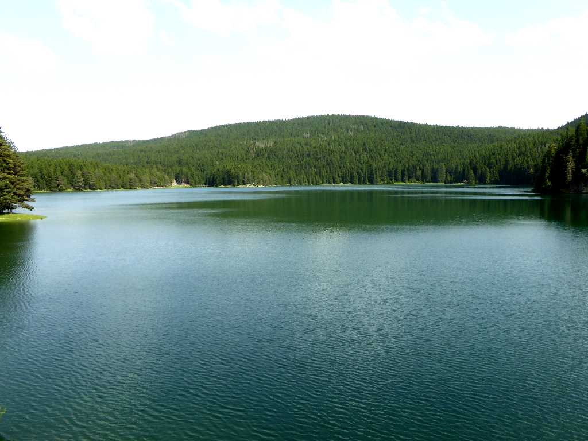
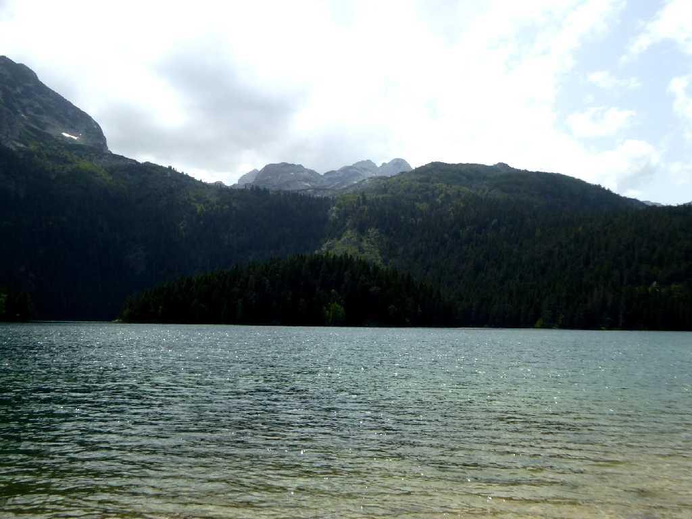
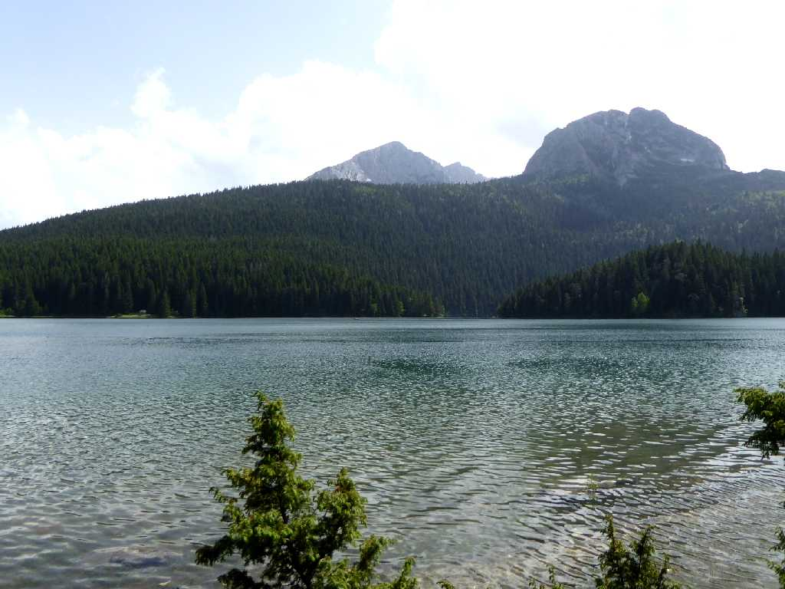
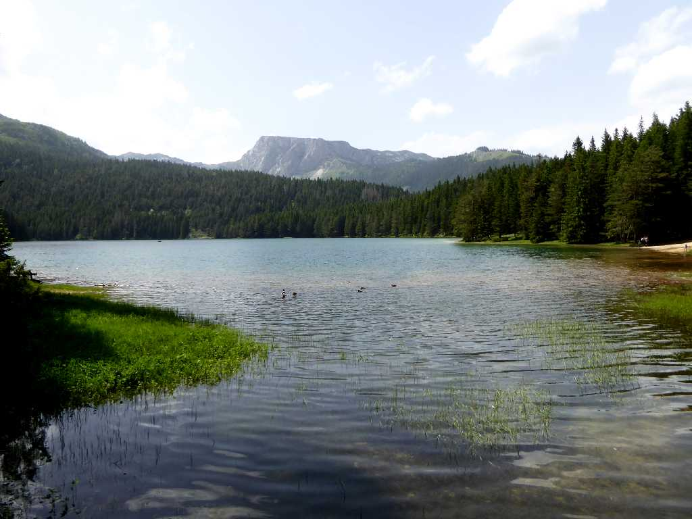
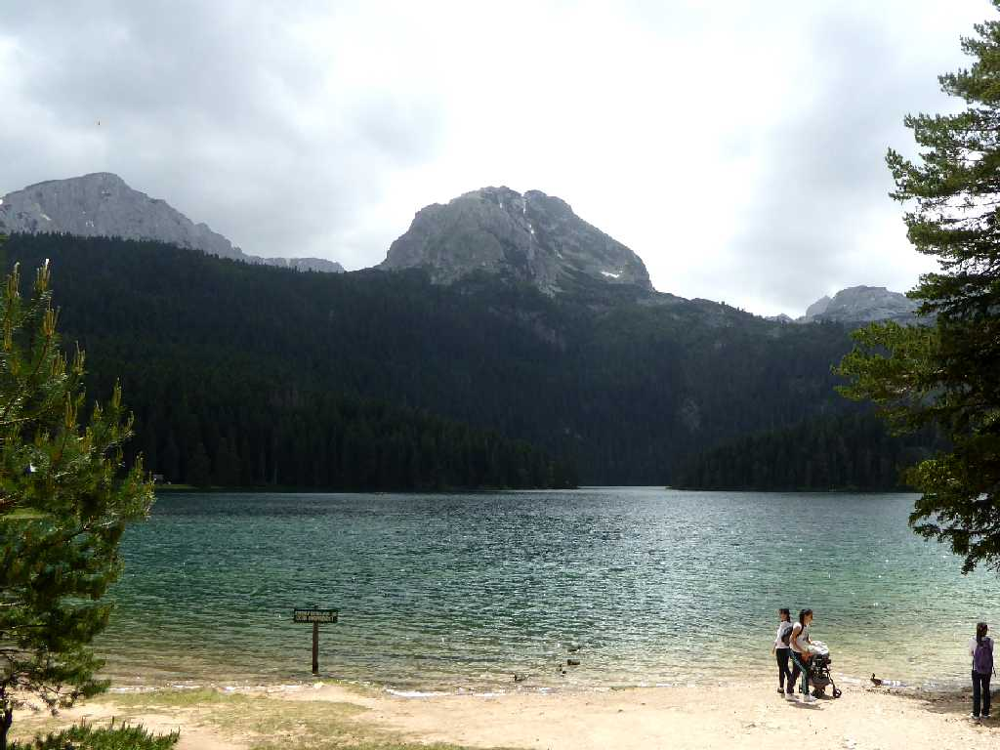
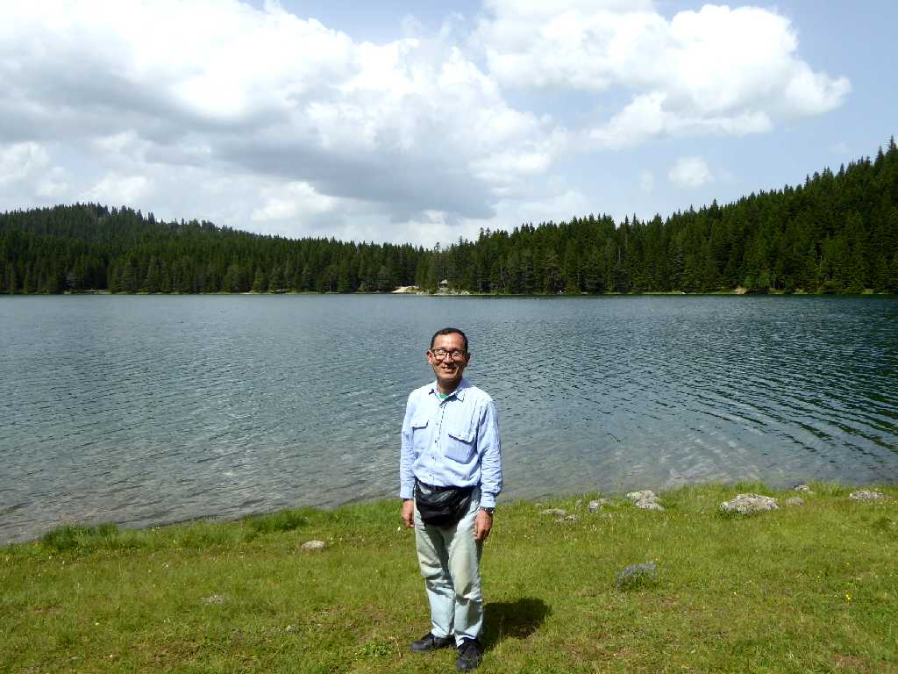

Crno Jezero (Black Lake) Nacionalni park Durmitor (Durmitor National Park)
ドゥルミトル国立公園にある山の目と云われる１７の氷河湖の一つ黒い湖

Bobotov Kuk 2,523m Crno Jezero
ボボトフクック山頂からはモンテネグロ全体が望めると云われている

Savin Kuk 2,313m Crno Jezero
２００６年セルビアから独立した国名のモンテネグロは黒い山を意味する

Crvena Greda 2,175m Crno Jezero

Međed 2,170m Crno Jezero

June 18 2016 Crno Jezero